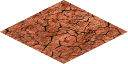

Desert
Martian deserts are not hot like Earth deserts, but they
resemble in amount of precipitation they receive. Rain is very rare
in poorly terraformed Mars and it is almost non existent in desert
terrain of the Red planet.
This type of terrain has some silica deposits and very little food can
be produced. In battle, it will not provide any advantages to
defender.
Improvements:

| Movement cost |
1 |
| Defence percentage |
0 |
| Resource |
Production |
| Food |
1 |
| Silica |
3 |